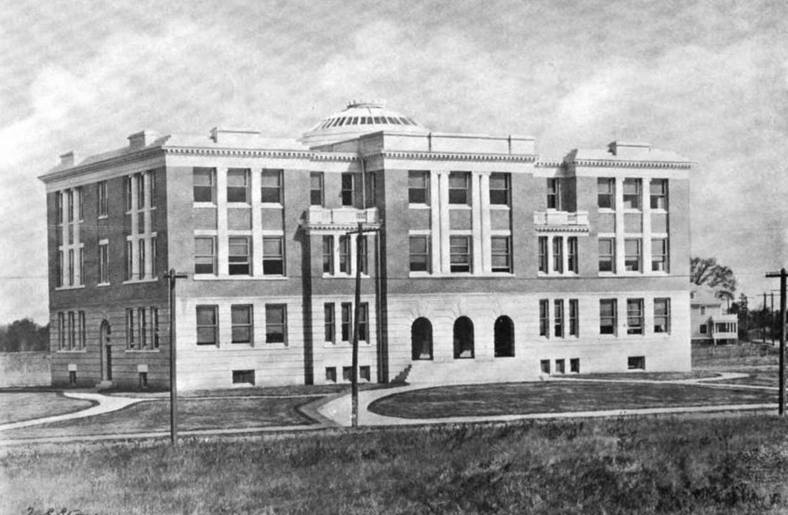
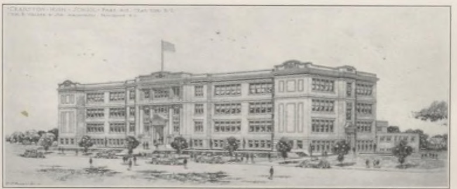
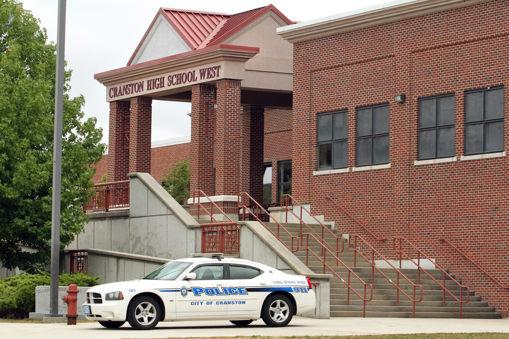

For most of us in the Class of 1971, the largest class Cranston ever graduated, Cranston East was simply “the high school”: the big brick building at 899 Park Avenue, with the old Briggs Building on the corner of Pontiac. Its story begins in 1891. Until then, Cranston students who wanted a high school education went to Providence. That year Providence decided to accept only its own residents in its high schools, and Cranston had to start a high school of its own.1
Cranston’s first answer was close at hand. Some high school studies were already being taught in the Edgewood and Arlington grammar schools.2 In 1892 the town authorized a high school in Auburn, and the Auburn district gave the town its old wooden schoolhouse on Cross Street for the purpose.3 Cranston High School opened there in September 1892, with A. H. Keyes of Westerly as principal and twenty-four pupils in its first term.4
The school grew quickly. By the spring of 1893 its boys had organized a branch of the Lyceum League.5 By the turn of the century the building had a High School Hall, where the Auburn grammar school held its graduations.6 An addition was put out to bid in 1899,7 and by September 1902 there were 150 pupils and seven teachers.2 Still, the building never caught up with the school. “Up to the present time,” the superintendent wrote as a new building neared completion, “the high school has been in the poorest building in town.”8
Relief came in 1903, when the school budget included an extra $50,000 for a new high school at the corner of Park and Pontiac Avenues.9 The architects were Banning & Thornton, with the design credited to Edward Thomas Banning.10 The building went up in 1904: three stories with a flat roof, brick above a limestone first story, and colossal pilasters across the front. In the 18th century the Jeremiah Williams Tavern had stood on the site.11 The Cranstonian called it “a fifty thousand dollar structure.”12 The high school moved into its new home around 1904.13
The old schoolhouse on Cross Street stood only a few years longer. At about three o’clock on the morning of January 17, 1907, fire broke out in a weave shed across the street. The wind carried sparks some 75 feet to the old wooden school, and about fifteen minutes later its roof fell in. Both buildings burned to the ground, with damage estimated at about $20,000.14

Cranston High School at Park and Pontiac Avenues, 1904, later the William A. Briggs Building. Photo by W. E. Stone, from the 35th Annual Report of the Rhode Island State Board of Education (1905). Public domain, via Wikimedia Commons.
One name runs through these early years. John K. Fenner taught science and mathematics from 1901 to 1909, came back as principal in 1912, and became superintendent of schools in 1917, a post he held until 1935.15
The 1904 building outlived its role as the high school. In the early 1930s, when Cranston started its junior high schools, it became the William A. Briggs Junior High. Rev. William A. Briggs had been a Baptist minister in Natick and Oaklawn, organized the Oaklawn Library, and later served nine years as superintendent of schools.16 The Briggs Building still stands beside the high school today.
Cranston became a city on March 10, 1910.17 By the 1920s the 1904 building was outgrown. Before plans were drawn for a new school, city councilmen visited “neighboring cities” to see their up-to-date schools.18 The design went to William R. Walker & Son of Providence: three stories of brick, with stepped parapets over a projecting central entrance.19

Architect’s drawing of the new Cranston High School on Park Avenue, from the 1926 Cranstonian.2021
Ground was broken on Monday, October 5, 1925. Mayor Arthur A. Rhodes lifted the first clod of earth, with a shovel donated by the Cranston News. School committee chairman Everett Potter and Superintendent Fenner were there, and contractor E. Turgeon’s steam shovel stood ready. The paper predicted the school would be finished by January 1, 1927.22
It wasn’t. A laborers’ strike pushed the opening “until after Christmas.” The builder then promised April, and in February 1927 the new date was “by May 1.”23 Then, on a Friday evening, February 18, 1927, six barrels of lacquer exploded in the nearly finished building. The papers reported that someone looking for a smoke had carelessly tossed a lighted match into a mixture of gasoline and naphtha. The $10,000 fire filled the school with smoke and damaged walls and ceilings, which meant at least two months of repairs and repainting.24 The yearbook recorded that the Class of 1927 could not graduate from the new building. While everyone waited, the old school ran part-time sessions for freshmen.23
A note on the fire’s date: the Cranston News of February 23, 1927 and the 1927 Cranstonian, both written at the time, place the fire in February. A Providence Journal article of October 23, 1927 later called it “last April.” We follow the reports written at the time.25
The new Cranston High School opened in September 1927, about September 12, with 899 students, 201 of them freshmen, and 26 classrooms. The principal was Clarence W. Bosworth, the vice principal Raymond R. Thompson, and the dean of girls Miss Vera L. Milliken.26 (By coincidence, that matches its house number.) The school day began at 8:30 and was divided into seven periods. For the first time the school had a gymnasium, and students took two periods of gym a week.27 On Saturday, October 22 the building was open for public inspection. The formal dedication was Sunday, October 23, 1927, at 3 p.m. in the new auditorium. School committeeman E. Butler Moulton presided, and Mayor Rhodes and Dr. Charles Carroll of the State Board of Education spoke. Police restricted parking on Park Avenue to keep the traffic moving.28
The February 1928 graduating class was “the first to complete its course in the new building, although not the first to graduate” there.27 (The Thunderbolt Alumni Association says the first class graduated from the building in 1927. The 1927 and 1928 yearbooks suggest otherwise, though a June 1927 graduation in the new auditorium can’t be ruled out.)29
A note on the cornerstone: we haven’t yet found when the cornerstone was laid. The Thunderbolt Alumni Association dates it to 1925, the year of the groundbreaking. A 1979 Cranston Herald retrospective, the only newspaper source found so far, says 1927; a search of the Providence Journal and the 1926–27 Cranston News turned up no report of a cornerstone ceremony, so the date remains unconfirmed. Sources also date the building itself variously to 1921, 1925 and 1927.30
Around the school, Park Avenue was becoming Cranston’s civic center. A large war memorial was built at Park and Pontiac in 1924, and City Hall went up next door in 1936.31 Between 1935 and 1939 the WPA built Cranston Stadium, with seats for 10,000 at the football and track field and 4,000 for baseball. In 1968 it was renamed Stebbins Field for longtime Cranston High football coach Edward C. Stebbins.32 In 1956 a large four-story addition was built on the south side of the main building.33
By the 1950s Cranston’s population had grown past what one high school could hold. In September 1958 Cranston High School West opened, only partly finished, with 159 pupils. Superintendent C. Herbert Taylor noted that the new school took pressure off the Hugh B. Bain Junior High.34 For its first years West also housed junior high students.35 West held its first commencement on the evening of June 10, 1963, in its gymnasium after chilly weather ruled out an outdoor ceremony, and graduated 138 seniors.36 West’s principal was Joseph A. Coccia, described in 1978 as having “been with West from the beginning.”37

Cranston High School West, March 13, 2020. Photo: Tym2412 / Wikimedia Commons, CC BY-SA 4.0.
West’s arrival gave the old school a new name. By September 11 and 14, 1958, notices in the Cranston Herald and the Providence Sunday Journal were already directing residents to “Cranston High School East, 899 Park Avenue.”38 By 1960 the yearbook called itself “The Annual Publication of the Seniors of Cranston High School East,” and 644 seniors graduated that year.39 Eleven years later, in 1971, East graduated about 721 seniors, the largest class in Cranston’s history.40 We have not yet found a School Committee vote or any formal announcement of the “East” name. What we know is that it was in use by mid-September 1958. The earliest uses found so far are a Cranston Herald photo caption of September 4, 1958 (“Cafeteria at Cranston High School East”) and the Providence Journal of September 4 and 14, 1958.4142
Sources disagree on West’s dates. The 1980 state survey dates West’s building to 1957, and its narrative mentions West’s construction “in 1966.” The Providence Journal of September 4, 1958 confirms the school opened that month.43
Many principals and teachers shaped the school over the decades. We have gathered what we know about them, with approximate dates, in Appendix: Principals and Staff of Cranston High School East.
The school’s colors are green and white.44 Cranston High was fielding an interscholastic football team by around 1906, while it was still in the Briggs building, but the newspapers of those years call it simply “Cranston High” or “the Cranston eleven,” and we have found no sign of a nickname before the move to Park Avenue. The earliest use of “Thunderbolt” we have found is in the Providence Journal of October 12, 1928, during the football team’s second season in the new building.45 The next fall the football team, “the Green Thunderbolt,” won the Rhode Island Interscholastic League championship under coach Carleton W. Merritt, with Edward C. Stebbins as line coach. The 1930 Cranstonian called it “the most successful season in the history of Cranston High School.”46 Merritt coached from 1924 to 1936, and Stebbins’s name is now on the field where Cranston plays.32
Starting in 1973, East and West have met on the football field every Thanksgiving. West won the first game, 12–3, and the game was cancelled only in 2020.47 On the ice, Cranston East won the state hockey championship in 1967. In 1969 it won both the state and New England titles, and it was the first high school team to play at the Providence Civic Center.48
The Cranstonian has recorded the school’s years for more than a century. The alumni collection reportedly starts with 1914, and many volumes from 1926 on survive online.49 Much of what we know about the school’s early history, starting with that 1926 “History of Cranston High School,” comes from its pages.
The building has been renewed more than once. In 1983 East and the Briggs Building got more than $200,000 in renovations, and the Briggs Building came to house the school department’s central administration.50 A single-story addition on the back of the school, housing the woodshop, the automotive shop and a new media center, was under construction in 2006, and in July 2007 the Herald described it as going up “at a breakneck pace.”51
In March 2017 the school had its New England accreditation visit.52 In 2018 a LEGO model of the main building was shown at PVDFest and at the Cranston Public Library, along with a panel discussion on public school architecture.53 In June 2024 Cranston voters approved a $40 million school bond. A city capital plan lists an HVAC and boiler upgrade for East, with construction set to start in June 2025.54
In 2024–25 Cranston East enrolled 1,525 students in grades 9 through 12, with 116 full-time classroom teachers.55 On June 10, 2025, 375 seniors graduated at commencement in Providence.56
In fall 2025, about a hundred years after ground was broken at 899 Park Avenue, the school opened its centennial at Homecoming. There was a ceremony, a parade down Park Avenue to the stadium, and a game against Middletown. The celebration runs through the graduation of the Class of 2027, the centennial of the building’s opening and dedication in 1927.57
From two dozen pupils in an old district schoolhouse in Auburn in 1892 to more than fifteen hundred today, the school on Park Avenue has taught Cranston for well over a century. For those of us who walked its halls, it’s still home.
Can you add to this history? We’d welcome corrections, photographs and memories, especially about principals since 2017, the 1958 renaming, and the newer additions to the building. Please contact ernie@chse1971.com.
Kennedy 1999. Kennedy is the only source found so far for the 1891 date. The 1892–93 and 1902–03 state reports and the 1926 Cranstonian don’t mention Providence’s decision, so no conflicting date has turned up. ↩
Rhode Island Board of Education, Annual Report (Google Books lists 1904; covers 1902–03), p. 85, V. Almy, Superintendent, “Brief Resumé of the History of the Cranston High School” (“the Auburn school district offered the present high school building and site”; one teacher in September 1892), https://books.google.com/books?id=CywlAQAAIAAJ&pg=RA7-PA85. ↩↩
Rhode Island State Board of Education, Annual Report (1892–93 school year), p. 112 (the district “voted to give the town the old school building in that district for high school purposes”), https://books.google.com/books?id=YXs_AQAAMAAJ&pg=RA4-PA112; Kennedy 1999 (“an old grammar school at the corner of Wellington Avenue and Cross Street”); Providence Journal, Jan. 17, 1907, p. 1 (“the old Cranston high school building on Cross street, in the village of Auburn”; “the old wooden school house”). The state reports don’t name the street, so identifying the 1892 schoolhouse with the Cross Street building is an inference, though a strong one. When the building was built is not yet known. ↩
Rhode Island State Board of Education, Annual Report (1892–93), p. 112, W. A. Briggs, Superintendent, https://books.google.com/books?id=YXs_AQAAMAAJ&pg=RA4-PA112; Annual Report (1902–03), p. 85, V. Almy, Superintendent, https://books.google.com/books?id=CywlAQAAIAAJ&pg=RA7-PA85. Sources disagree on the first years. The 1926 Cranstonian history says the first high school course was offered in 1892 in sessions held alongside the grammar schools, with only twelve pupils, and that “after three years under these conditions” (about 1895) the school moved into “the old Auburn Grammar School building left vacant at the erection of the Doric Avenue School”; it names the faculty as a “Mr. Keyes,” soon joined by Mr. Reynolds and Miss Tower. Kennedy 1999 also describes rooms set aside at the Arlington, Auburn and Edgewood schools. The state reports, written at the time, put the school in its own Auburn building from September 1892, and contemporary newspapers distinguish “the High School at Auburn” from “the Auburn grammar school” (Providence Journal, Nov. 13, 1895, p. 4; also June 26, 1901, p. 3, and Oct. 15, 1902, p. 8). The conflict is unresolved. ↩
Providence Journal, Apr. 21, 1893, p. 5. (Read from rough OCR.) ↩
Providence Journal, June 26, 1901, p. 3 (Auburn column; rough OCR), and Oct. 15, 1902, p. 8 (School Committee; Miss Eulalia J. Towne). ↩
Engineering News, 1899, p. 186 (Google Books snippet view only; full page not seen): “Bids are asked until May 27 for building an addition to the Cranston high school building at Auburn.” ↩
Rhode Island Board of Education, Annual Report (Google Books lists 1905; covers 1903–04), p. 82, V. Almy, Superintendent, https://books.google.com/books?id=TCwlAQAAIAAJ&pg=RA6-PA82. ↩
Kennedy 1999. ↩
Wikimedia Commons file description, citing the 1905 State Board of Education report; RIHPC 1980. ↩
RIHPC 1980, inventory. ↩
Cranstonian 1926. ↩
Neither the exact day the building opened or was dedicated nor the month the high school moved in has been found. State Board of Education tables (snippets only, not verified) list the school at Auburn for 1903–04 and on Park Avenue for 1904–05, suggesting the move came at the start of the 1904–05 school year. The superintendent’s report for 1903–04 still speaks of the new building as about to be occupied. The address is given as 865 Park Avenue in RIHPC 1980 and 845 Park Avenue in Wikipedia and RIDE listings. ↩
Providence Journal, Jan. 17, 1907, p. 1, “School House and Weave Shed Burn,” which opens: “The old Cranston high school building on Cross street, in the village of Auburn, and a weave shed were burned to the ground by a fire which started at about 3 o’clock this morning, causing damage estimated at about $20,000.” The cause of the fire was unknown; the article doesn’t name the mill’s owner, and no follow-up story has been found. Sources disagree on the fire. The 1980 RIHPC survey says the Town Council decided to build a new high school “after Cranston’s first high school burned,” which would put a fire before 1904; the Journal dates the fire of the old high school building to January 1907, after the move to Park Avenue. The 1926 Cranstonian mentions no fire and says only that the number of pupils “warranted the erection of the present building.” The conflict is unresolved. ↩
Cranstonian 1926 and 1936. ↩
Cranston Herald, Aug. 15, 1979, p. 5 (Mary Lou Kavanagh, “The Story of Cranston’s Schools: The William A. Briggs School”); RIHPC 1980; Kennedy 1999. ↩
Wikipedia, “Cranston, Rhode Island”; RIHPC 1980. ↩
Cranstonian 1927. ↩
RIHPC 1980, inventory; Wikipedia, “William R. Walker & Son”; Cranston News, Feb. 23, 1927, p. 5. ↩
The Cranstonian, 1926, p. 12. Internet Archive, https://archive.org/details/classmates-yearbook-43002-1926-cranston-high-school-east, leaf 0015. Public domain. ↩
The 1980 RIHPC survey of Cranston, entry A899, gives “Cranston High School 1921 ... designed by William Walker and Sons,” with a four-story addition in 1956 (https://preservation.ri.gov/sites/g/files/xkgbur406/files/pdfs_zips_downloads/survey_pdfs/cranston.pdf). The 1921 date doesn’t fit the other sources: the 1926 Cranstonian, which printed this drawing, expected the move into the new building “probably within the coming year,” and the school opened in September 1927. ↩
Cranston News, Oct. 7, 1925, p. 3. ↩
Cranston News, Feb. 23, 1927, p. 5, and Mar. 9, 1927, pp. 1, 4; Cranstonian 1927. ↩
Providence Journal, Oct. 23, 1927, p. 8, against Cranston News, Feb. 23, 1927, and Cranstonian 1927. ↩
Providence Sunday Journal, Sept. 25, 1927, image p. 45: the school “opened two weeks ago with an enrollment of 899 students, of whom 201 are Freshmen”; “class rooms, of which there are 26 in the school.” The date of about Sept. 12 is worked out from “two weeks ago.” ↩
Providence Journal, Oct. 23, 1927, p. 8; Cranston News, Oct. 19, 1927, p. 1. ↩
Thunderbolt Alumni Association centennial page; Cranstonian 1927 and 1928. ↩
Thunderbolt Alumni Association (cornerstone 1925); Cranston Herald, Aug. 15, 1979, p. 5 (“in 1927 the cornerstone was laid”; the only newspaper source found); RIHPC 1980 inventory (1921) and narrative (1927); Kennedy 1999 (1925). ↩
RIHPC 1980. ↩
RIHPC 1980, inventory. ↩
Providence Journal, Sept. 4, 1958, p. 23. ↩
Providence Journal, June 14, 1962. (Known so far only from a search snippet.) ↩
Providence Journal, June 11, 1963, p. 45. ↩
Cranston Herald, May 10, 1962, p. 14; Dec. 1, 1966, p. 8; Dec. 28, 1967, p. 12; Apr. 26, 1978, p. 10. Unresolved: a Herald snippet of Jan. 8, 1970 calls a Mr. Shappy the “first principal of CHW.” That conflicts with Coccia being “with West from the beginning,” and may mean only that Shappy was there from the start. A 1964 item on “Principal Joseph Coccia” at graduation refers to West, not East. ↩
Cranston Herald, Sept. 11, 1958, p. 9; Providence Sunday Journal, Sept. 14, 1958, p. 133. ↩
Cranstonian 1960. ↩
Class size from the alumni essay “Whatever happened to the class of ‘71?” (cranstononline.com), which gives 721 graduates and also calls it the largest class in Rhode Island at the time; we have not yet checked it against commencement records or the 1971 Cranstonian. The only other East count found is 644 for 1960 (Cranstonian 1960). We found no East class counts for 1961–70 or 1972–80, so “largest in Cranston’s history” rests on the alumni account and our own memory of the class. The 1932 Cranstonian made the same claim for its own “over two hundred” graduates, in its own era. ↩
The 1955 and 1957 Cranstonian use plain “Cranston High School.” The 1958 and 1959 volumes haven’t been read. ↩
Cranston Herald, Sept. 4, 1958, p. 5; Providence Journal, Sept. 4 and 14, 1958. No School Committee vote on the name has been found in the Herald for 1957–58. ↩
RIHPC 1980, inventory and narrative; Providence Journal, Sept. 4, 1958. ↩
Wikipedia, “Cranston High School East.” ↩
Providence Journal, Oct. 12, 1928 (football; date checked against the page header, since database index dates can be wrong). The earliest football game found for Cranston High is a 12–0 loss to East Providence in an Interscholastic League game, Oct. 19, 1906 (Providence Journal, Oct. 20, 1906, p. 4); by Oct. 12, 1908 the Journal lists Cranston among six league teams and says the school had hired “Bingham of Brown as coach.” In 1924 the coach was H. C. Reeves with Carleton Merritt, a former University of Maine quarterback and instructor at the school, as assistant; by Sept. 18, 1925 Merritt “will do all the coaching this fall.” In the Journal items sampled for 1906–1927 and in the 1920–1929 Cranstonian volumes, the team is just “Cranston High,” “the Cranston eleven” or “Coach Merritt’s gang”; “Thunderbolt,” “Bolts” and “Green and White” do not appear. The fall 1927 season and the 1911–1923 seasons were checked only thinly, so an earlier nickname is not ruled out. The Park Avenue school was “occupied for the first time” in September 1927 (Providence Journal, Sept. 12, 1927; enrollment 899 on Sept. 25, 1927). The Briggs building dates from 1903–04: the 1980 RIHPC inventory lists “William A. Briggs School 1904,” and the 1926 Cranstonian says “In 1904 the number of pupils warranted the erection of the present building”; the exact opening day was not found. ↩
Cranstonian 1930; Cranstonian 1936, 1940, 1946. ↩
rihssports.com, East–West Thanksgiving results. ↩
Obituary of Richard Ernst, Butterfield Home, 2016. ↩
Cranston East Alumni Room page (via search snippet); e-yearbook.com collection. ↩
Cranston Herald, July 14, 1983, p. 2; Cranston Mirror, July 21, 1983, p. 2. ↩
Cranston Herald, Feb. 2, 2006, p. 7; Aug. 10, 2006, p. 4; July 26, 2007, p. 16. ↩
Cranston Herald (RhodyBeat), 2017. ↩
Groverlicious, “Cranston East High School” LEGO project. ↩
Patch, 2024; TurnTo10, June 4, 2024; ConstructConnect. ↩
National Center for Education Statistics, Common Core of Data, 2024–25. ↩
Cranston Herald, June 2025. ↩
Thunderbolt Alumni Association centennial page. ↩
Primary and contemporary
Secondary
Images